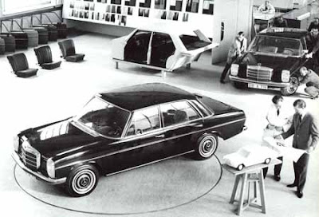
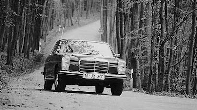
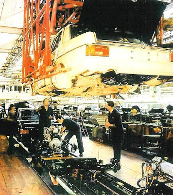
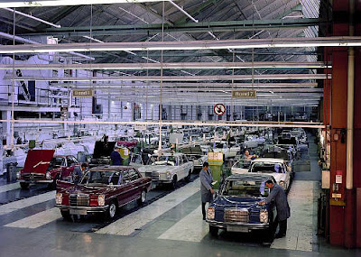
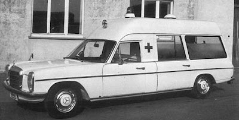
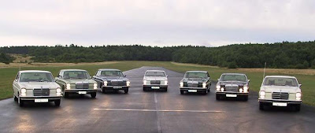
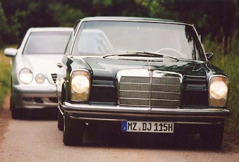
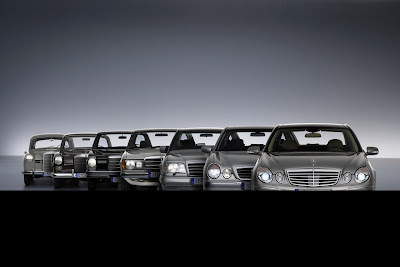

História Classe E
A série 200, ou W114/W115, foi um grande sucesso da Mercedes-Benz nos quatro cantos do planeta e tornou-se uma referência de robustez, elegância e fiabilidade.
A mais famosa fabricante de sedan’s de luxo da Alemanha, a Mercedes-Benz, situada em Stuttgart, ficou ainda mais conhecida depois de 1950. Com carros bonitos, seguros e luxuosos, seu prestígio sempre foi grande nos quatro cantos do mundo.
Em 1968, no Salão de Frankfurt, para substituir o já antiquado 190 (plataforma W110, na denominação interna da marca), lançava um modelo que faria muito sucesso: o de série 200 ou plataforma W114/W115. O novo sedam tinha linhas equilibradas, modernas e bonitas, com três volumes distintos e quatro portas, e uma gama enorme de motores a gasolina e a diesel.
Contexto Histórico
A série 200, ou W114/W115, foi um grande sucesso da Mercedes-Benz nos quatro cantos do planeta.
A mais famosa fabricante de sedan’s de luxo da Alemanha, a Mercedes-Benz, situada em Stuttgart, ficou ainda mais conhecida depois de 1950. Com carros bonitos, seguros e luxuosos, seu prestígio sempre foi grande nos quatro cantos do mundo.
Em 1968, no Salão de Frankfurt, para substituir o já antiquado 190 (plataforma W110), lançava um modelo que faria muito sucesso: o de série 200 ou plataforma W114/W115. O novo sedam tinha linhas equilibradas, modernas e bonitas, com três volumes distintos e quatro portas, e uma gama enorme de motores a gasolina e a diesel.

Do pacato 200 ao mais potente 280, passando pela versão a diesel, foi um dos Mercedes de maior sucesso e um verdadeiro precursor da actual Classe E.

Na frente vinham a tradicional grade do radiador, com a famosíssima estrela de três pontas em cima, e os faróis rectangulares em posição vertical. A traseira era bonita e de desenho simples. Na tampa da bagageira, a estrela ficava ao centro e o logótipo que distinguia a versão à esquerda. Transportava com muito conforto cinco ocupantes. Era chamado de pequeno Mercedes, mas media 4,68 metros de comprimento.

Motores e versões
O motor básico era um quatro-cilindros de 1.988 cm3 e 95 cv a 4.800 rpm, com comando de válvulas no cabeçote. O câmbio de quatro marchas podia ter alavanca na coluna de direcção, para os mais tradicionais, ou no assoalho. Também era oferecida a opção automática. Com tracção traseira, sua velocidade máxima era de 165 km/h e a aceleração não arrancava suspiros, pois era pesado -- 1.310 kg.

Logo depois vinha o modelo 220, um pouco mais ágil que o 200. O modelo 230 agradava mais, com seis cilindros em linha e 2.292 cm3. A potência subia para 120 cv e era equipado com dois carburadores. Existia a opção de câmbio de cinco marchas e a final beirava os 175 km/h. Como os demais modelos, tinha freios a disco nas quatro rodas e usava pneus de aro 14 pol. Todos os modelos tinham belas calotas, com o círculo central na cor da carroçaria.
Linhas equilibradas, interior confortável e robustez mecânica não escondiam a origem: era mais uma série distinta da marca de Stuttgart.
Para aqueles que desejavam um carro de luxo mas económico, a opção 220 D era oferecida. O motor diesel de quatro cilindros e 2.160 cm3 atingia 60 cv, levando-o à máxima de 136 km/h com uma aceleração lenta. Nessa época os motores a óleo diesel eram pouco potentes, faziam muito barulho e vibravam. Mas esse MB foi muito vendido, por ser robusto e económico.
No mesmo ano, em Outubro, era lançada uma versão que fez bastante sucesso, com distância entre eixos maior: a Lang (longa). Media 5,34 metros e pesava 1.545 kg. De lado a diferença era clara: porta traseira grande e três vidros laterais. Fez muito sucesso como táxi e como carro de agências de turismo, além de serviços em embaixadas, consulados e grandes empresas.
Neste caso poderia receber bagageiros cromados sobre o teto ou sobre o porta-malas. Dependendo da opção, transportava seis ou sete passageiros mais o motorista. Podia receber tanto o motor do 230 quanto o 220 D.
Em 1968, no Salão de Bruxelas, na Bélgica, chegava uma opção muito interessante para a linha, a 250. Por fora era identificada pelo pára-choques com lâminas duplas e a grade de barras mais finas. O motor era um seis-cilindros herdado do antigo 250 S, com 2.496 cm3, 130 cv a 5.400 rpm e dois carburadores. Tinha cinco velocidades e não quatro, como os 230. Sua velocidade máxima era de 182 km/h.
Muito estável em curvas e em altas velocidades, era silencioso e confiável. Apesar de não ser um primor em aerodinâmica, fluía muito bem, dando muita segurança ao motorista.
Por dentro, toda a linha 200 recebia o mesmo capricho. Bancos confortáveis, dianteiros individuais, com ou sem apoio de cabeça, tecido de boa qualidade, opção pelo couro. O volante, de grande diâmetro como manda a escola alemã, tinha um aro externo metálico para accionar a buzina. A direcção era assistida. No painel havia três mostradores redondos, incluindo conta-rotações. O teto solar era um acessório muito bem vindo, que dava um charme extra.
Em 1969, também no salão belga, era apresentada uma versão que até hoje é objecto de colecção: o modelo coupé. Clássico e distinto, não era um desportivo, mas tinha bela aparência. O teto era um pouco mais baixo e o pára-brisas mais inclinado. Tinha o mesmo comprimento do sedam mas suas portas eram maiores e a coluna traseira tinha maior inclinação. Era confortável para quatro pessoas. Com o mesmo motor seis-cilindros, sua denominação é 250 C.
Em Abril de 1972 mais um motor estava disponível: um novo de 2.746 cm3, duplo comando de válvulas e potência de 160 cv a 5.500 rpm. A versão 280 chegava a 190 km/h e recebia também pneus radiais 185 HR 14. Por fora havia pára-brisas laminado e, opcionalmente, um dispositivo de limpeza dos faróis. Logo depois este motor recebia injecção electrónica, passando a 185 cv, com velocidade máxima de 205 km/h.
A versão entre eixos longo foi usada em muitas aplicações, tornando-se até ambulância.

Evolução e Legado
Em Outubro de 1973, no Salão de Paris, toda a linha 200 recebia modificações estéticas. A grade estava mais larga e mais baixa, na traseira vinham novas lanternas com ranhuras, e por dentro a parte central do volante agora era emborrachada. A regulação dos retrovisores passava a ser interna. A nova versão 240 D trazia uma luz-piloto no painel, indicando o pré-aquecimento, quando o motor a diesel podia ser ligado.
Em Janeiro de 1976 a série era substituída por uma mais moderna. A revista da fábrica alemã, In Aller Welt, mostrava-o em várias paisagens do planeta, demonstrando sua aceitação mundial. Foi mesmo um carro confiável e resistente, que é visto hoje nas mãos de coleccionadores e usuários comuns que o utilizam no dia-a-dia.


